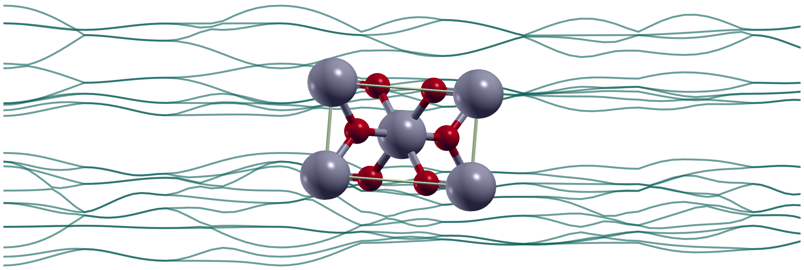
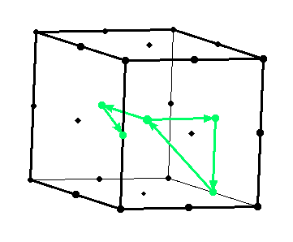
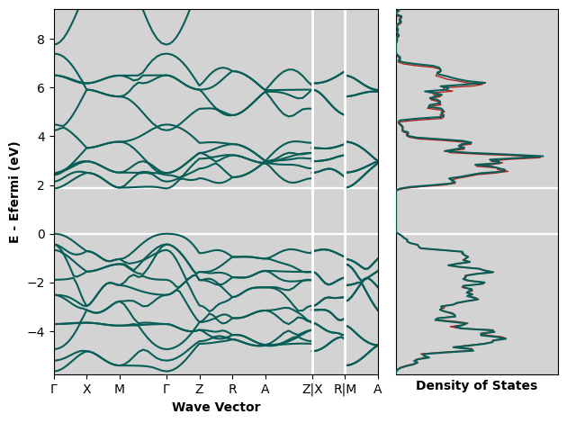
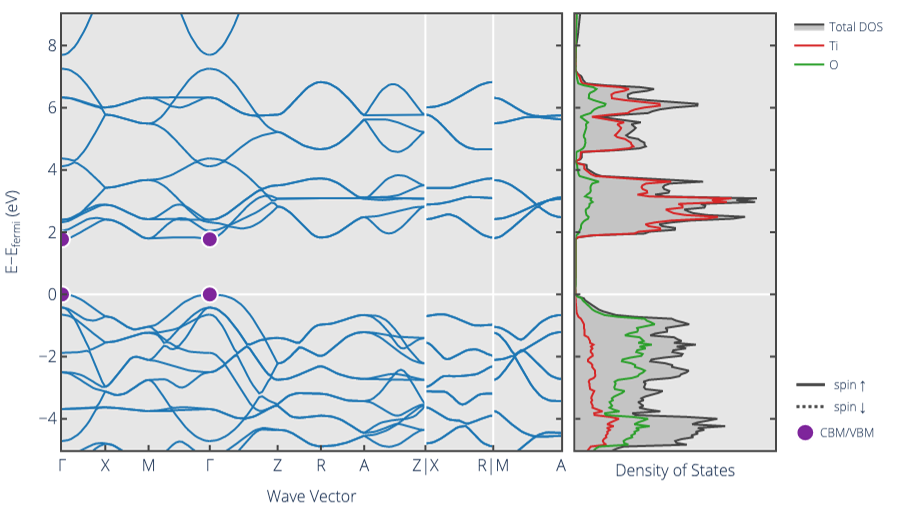

Data Portfolio | Chemical Simulation
3b | Band Structure and Density of States
This project aims to calculate the band structure and density of states for periodic inorganic crystals in Quantum ESPRESSO, covering a variety of major structure types. The process is shown in detail for rutile (tetragonal TiO2), with further examples following the same workflow included. The workflow described involves running non-self-consistent field calculations along defined paths through the crystal or over a uniform k-grid to afford the band structure or density of states.
Step 1 | Defining the k-Path
For the band structure calculation, a particular path through the crystal structure must be defined along which energies may be calculated. I drew from the Materials Project to determine these paths (e.g. the Materials Project entry for rutile). This then allowed comparison between my results and those calculations.
The coordinates corresponding to the desired k-path were determined by first running a self-consistent field (SCF) calculation (using the optimised unit cell parameters from this project) and using xcrysden's 'k-path Selection' tool. This tool displays the Brillouin lattice for the structure with the high-symmetry points shown. These can be selected in order by the user and exported as a '.kpf' text file and used to construct the pw.x executable 'bands' calculation.

The image shows a user-selected partial k-path used in the calculation for rutile (gamma, X, M, gamma, Z, R, ...)
Step 2 | Band Structure Calculation
The structure of the pw.x 'bands' input file is very similar to the SCF input file, with the k-Path used in place of a uniform grid. This file shows only the high-symmetry points and specifies a number of sampling points to automatically generate between those points (here 10.0). Under &SYSTEM, the 'nbnd' parameter is also added. This must be sufficiently high to include all occupied bands and some unoccupied bands to afford the structures of the valance and conduction bands.
calculation = 'bands',
prefix = 'rutile',
outdir = './tmp/'
pseudo_dir = './pseudos/'
!verbosity = 'high'
/
&SYSTEM
ibrav = 6
celldm(1) = 8.7737677793 ! a in bohr
celldm(3) = 0.6383275150 ! c/a
nat = 6,
ntyp = 2,
ecutwfc = 50
ecutrho = 200
nbnd = 35
/
&ELECTRONS
mixing_beta = 0.6
/
ATOMIC_SPECIES
Ti 47.867 Ti_pbe_v1.4.uspp.F.upf
O 15.999 O.pbe-n-kjpaw_psl.0.1.upf
ATOMIC_POSITIONS (crystal)
Ti 0.0000000000 0.0000000000 0.0000000000
Ti 0.5000000000 0.5000000000 0.5000000000
O 0.3051058645 0.3051058645 -0.0000000000
O 0.1948941355 0.8051058645 0.5000000000
O -0.3051058645 -0.3051058645 -0.0000000000
O 0.8051058645 0.1948941355 0.5000000000
K_POINTS (tpiba_b)
12
0.0000000000 0.0000000000 0.0000000000 10.0 !GAMMA
0.0000000000 0.5000000000 0.0000000000 10.0 !X
-0.5000000000 0.5000000000 0.0000000000 10.0 !M
0.0000000000 0.0000000000 0.0000000000 10.0 !GAMMA
0.0000000000 0.0000000000 0.5000000000 10.0 !Z
0.0000000000 0.5000000000 0.5000000000 10.0 !R
0.5000000000 0.5000000000 0.5000000000 10.0 !A
0.0000000000 0.0000000000 0.5000000000 10.0 !Z
0.0000000000 -0.5000000000 0.0000000000 10.0 !X
0.0000000000 -0.5000000000 0.5000000000 10.0 !R
0.5000000000 -0.5000000000 0.0000000000 10.0 !M
0.5000000000 -0.5000000000 0.5000000000 0.0 !A
(env) qe:~/folder/path$ xcrysden --pwo rutile.scf.out
User selects k-path and exports the coordinates as a '.kpf' file to construct the pw.x 'bands' input file
(env) qe:~/folder/path$ pw.x <rutile_kpath.bands.in> rutile_kpath.bands.out
The wavefunctions calculated through this workflow were then converted to an easily visualised format using the bands.x executable. This data can then be plotted (as shown in the 'Results' section below).
prefix = 'rutile'
filband = 'rutile_bands.dat'
outdir = './tmp/'
/
Step 3 | Density of States (DOS) Calculation
The DOS calculation follows a similar workflow to the band structure. Intially, an SCF calculation is used to solve the ground state of the crystal. This is followed by a non-self-consistent field (NSCF) calculation with a denser k-point grid to determine allowed energy levels across the material. Note that the k-point grid is doubled from that used in the SCF calculation for this work. The 'bands' calculation above is equivalent to an NSCF calculation constrained to points along the k=path. The dos.x executable is then used to tally up the energy levels from the NSCF calculation and calculate the number of states existing at each energy.
calculation = 'nscf',
prefix = 'rutile',
outdir = './tmp/'
pseudo_dir = './pseudos/'
/
&SYSTEM
...
nbnd = 35
/
&ELECTRONS
...
/
ATOMIC_SPECIES
...
ATOMIC_POSITIONS (crystal)
...
K_POINTS (automatic)
8 8 12 0 0 0
prefix = 'rutile'
Emin = 3.00, Emax = 18.00
DeltaE = 0.07
ngauss = 0
fildos = 'rutile_dos.dat'
outdir = './tmp/'
/
(env) qe:~/folder/path$ pw.x <rutile.nscf.in> rutile.nscf.out
(env) qe:~/folder/path$ dos.x <rutile.dos.in> rutile.dos.out
Results | Rutile Band Structure and DOS
Band Structure from this Calculation

Band Structure from the Materials Project

The band gap given from my calculation is 1.8565 eV. This is far below the experimentally measured value of ~3.0 eV, however, DFT-calculated values using PBE functionals are known to systematically underestimate band gaps so this is not a cause for concern. The Materials Project value is 1.772 eV and other studies report calculated values without corrections similar to mine (such as 1.86 eV from Lee et al. and 1.85 eV from Li et al.)
The band structures from my calculation and the Materials Project seem to be in some agreement - the coarse struture of the bands is similar, but the fine structure shows some differences. I believe this is most likely due to the different pseudopotentials used for the two calculations. Materials Project band structure calculations are peformed using VASP pseudopotentials, which I cannot access. To try and compare like-for-like, I ran the same calculation detailed above using the unit cell parameters from the Materials Project entry for rutile. The results for density of states are shown in as the thinner red trace in the top figure. There is a slight shift from the values with my optimised cell, but the coarse and fine structures are the same.